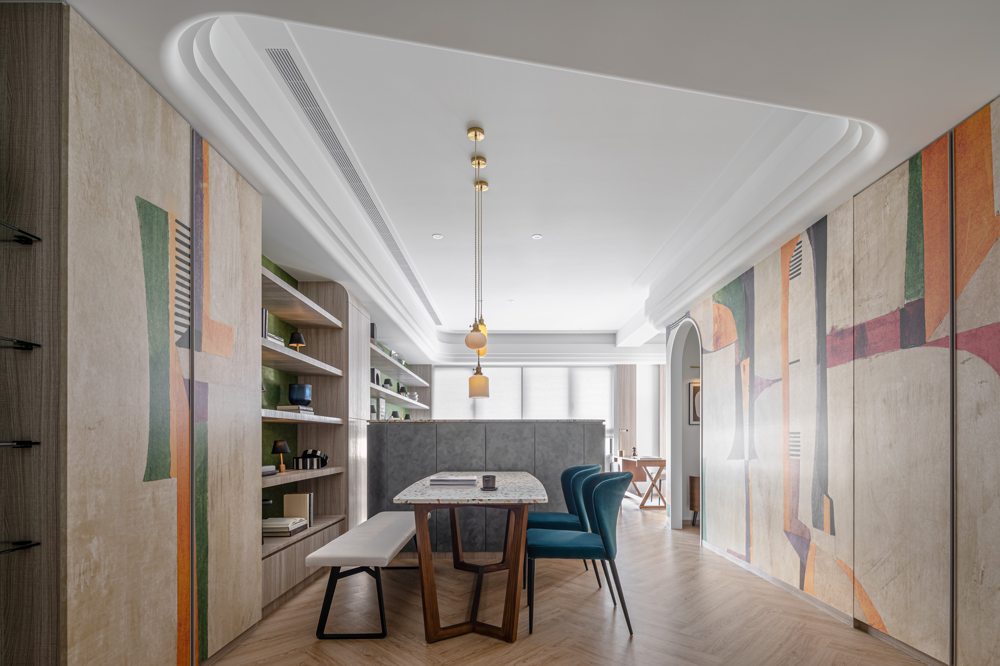
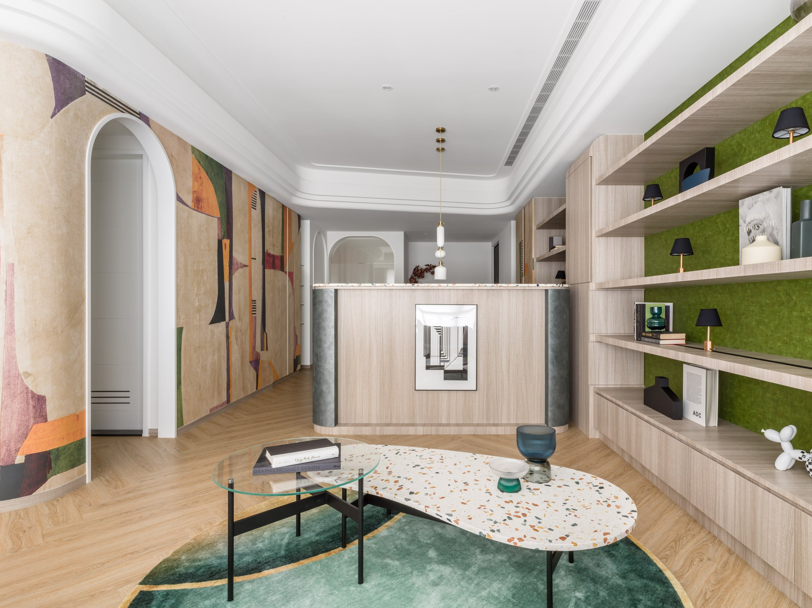
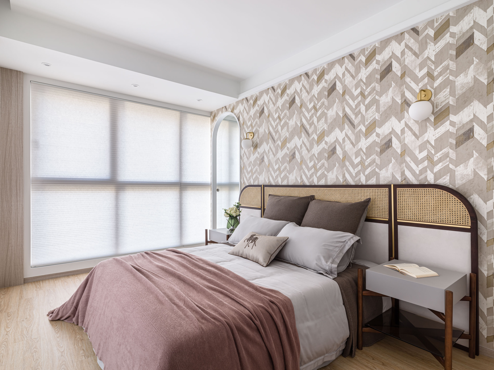
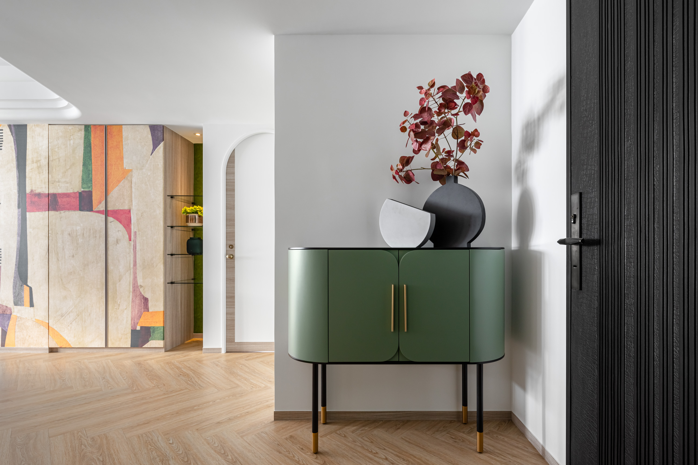
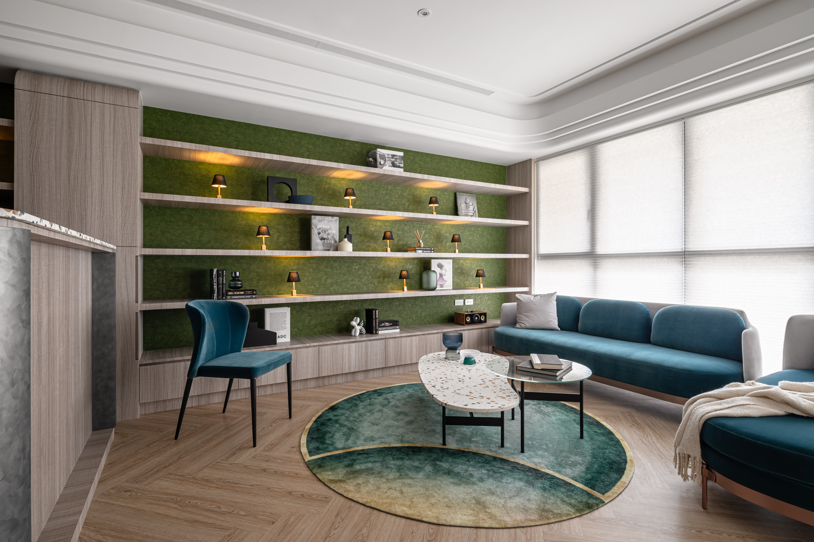
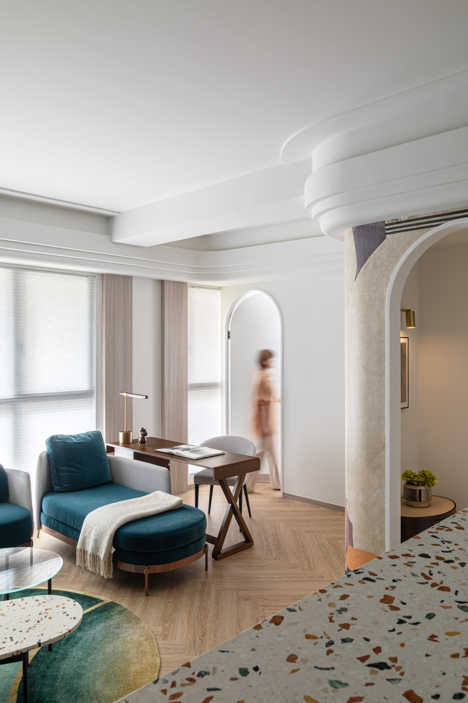
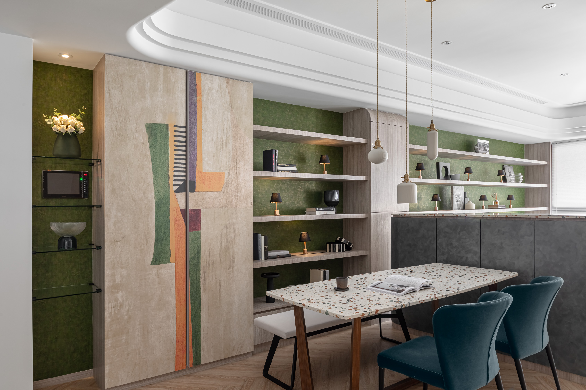

一個門的位置改變，空間的呼吸方式就跟著改變。
One door moved, and the way the space breathes changed with it.


01
這是一個雙面採光的實品屋。主臥格局開闊，但門的位置讓空間被侷限了。我們把靠牆的門移到窗側，讓行走路徑圍繞窗邊展開，形成一條新的動線與空間感。
A double-aspect show unit. The master bedroom was generous, but door placement confined the space. We relocated the door from wall to window side, so the path unfolds around the glazing — a new circulation, a new spatial quality.


02
動線決定空間被感知的方式。門靠牆，進入主臥之後視線直接被牆面截停。移到窗側，身體移動中感受到的是光，而不是邊界。這個調整不改變任何一個房間的尺寸，卻改變了整個空間的開放感。
Circulation determines how space is perceived. With the door against the wall, the eye hits a dead end. Moved to the window side, what the body registers in motion is light, not boundary. No room dimension changes, yet the sense of openness transforms.


03
書牆的燈光用工程手法解決。軌道燈倒裝在層板內，改裝為可滑動的小立燈——光源可以沿著層架移動，不需要額外插座。燈具因此是陳列的一部分，可以跟著書的位置一起移動。
Bookshelf lighting solved with engineering, not decoration. Track lights inverted into shelf boards become sliding mini-lamps — the source travels along the shelving without extra sockets. The fixture is part of the display, moving with the books.

04
法國進口壁紙讓牆面保有手感而不失秩序。低飽和的綠灰不是設計師的偏好，是讓家具與物件能在其中自然成立的底色——讓住進去的人帶著自己的生活進來，而不是被空間的風格限定。
French imported wallpaper gives the walls hand-quality without losing order. The low-saturation grey-green is not a preference — it is the backdrop that lets furniture and objects exist naturally, inviting residents to bring their own life in rather than being defined by the space.


05
實品屋的設計挑戰是：住的人還不存在。你不能為一個特定的人設計，但你可以為一種生活方式設計。這個案子選擇的生活方式是「有閱讀習慣、喜歡自然光、需要安靜的獨處時間」——讓看屋的人走進來，覺得這就是自己想要的日常。
The challenge of a show unit: the resident does not yet exist. You cannot design for a specific person, but you can design for a way of living. This project chose a life of reading habits, natural light, and quiet solitude — so the visitor walks in and feels this is the daily life they want.
All Photos